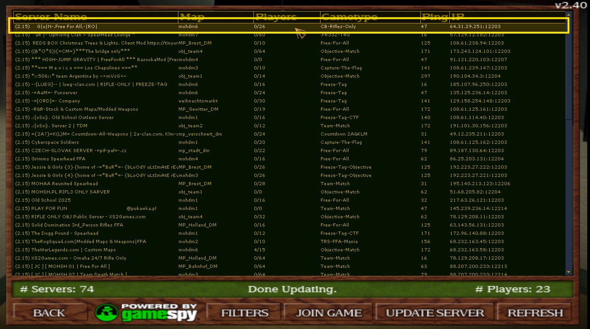
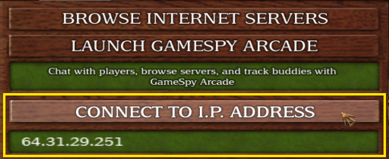

Last living hub for Spearhead, and it will live forever...
How to Play Online
Play Spearhead online, join the G|u|N server, and add a quick-connect bind.
Translations Available:
English
|
Arabic
|
German
|
Russian
|
Armenian
|
Spanish
Join G|u|N Clan Server — 2 Easy Ways
Ready to jump into multiplayer? Here are two quick ways to join the
G|u|N-.Freezytag.-|RO| server:
either find us through the in-game server browser, or set up a simple key bind
so you can connect instantly with one press.
Option 1: Use the In-Game Server Browser
Launch Spearhead
or launch Breakthrough
.
Go to Multiplayer → Browse Internet Servers.
Wait for the server list to load. If it doesn’t, try Refresh (button bottom-right).
Look for G|u|N-.Freezytag.-|RO|, or anything starting with
G|u|N.
Double click and join the fun!

Option 2: Connect Directly by IP Address
Launch Spearhead
or launch Breakthrough
.
Go to Multiplayer → Browse Internet Servers.
In the Connect to IP Address field, enter:
64.31.29.251
(IP may change — you can always check it on our website banner at gunclan.org.)

Click Connect to I.P. address (or press Enter) to join.
Make sure you're on the Internet tab, not LAN.
Option 3. Bind a Key for 1-Click Join
If you want to join the G|u|N-.Freezytag.-|RO| server by pressing a single key (for example F10) every time you open the game?
Here's how:
Locate your unnamedsoldier.cfg file. You'll usually find it in:
For Spearhead: C:\Games\MOHAA\mainta\configs\
For Breakthrough
: C:\Games\MOHAA\maintt\configs\
Open the file with a text editor like Notepad.
Scroll to the bottom and add the following line:
bind F10 "connect 64.31.29.251"
Your unnamedsoldier.cfg file should look roughly like this in Notepad:
You can replace F10 with any other unused key.
Save the file.
Launch Spearhead
or launch Breakthrough
and press F10 in-game to instantly join the G|u|N server.
هل تريد لعب MOH: Spearhead أونلاين بدون مفاتيح تشغيل، تصحيحات، أو إعدادات معقدة؟
فقط حمّل وشغّل!
الخطوة 1: تحميل إصدار MOHAA Revival
إصدار Revival يتضمن:
لعبة Medal of Honor: Allied Assault والإضافات
Spearhead وBreakthrough
Starte das Symbol moh_spearhead aus dem Ordner oder über die Desktop-Verknüpfung.
Schritt 3: Dem G|u|N Clan-Server beitreten – 3 einfache Wege
1. Den Serverbrowser im Spiel verwenden
Starte Spearhead.
Gehe zu Multiplayer Room → Browse Internet Servers.
Oder gib unsere Server-IP direkt im Feld Connect to IP Address ein:
217.182.197.233
(Die IP kann sich ändern – du findest sie immer im Banner auf gunclan.org.)
Warte, bis die Serverliste geladen ist. Falls nichts erscheint, klicke auf Refresh (Button unten rechts).
Suche nach
G|u|N-.Free For All.-|RO|,
G|u|N-.Freez-Tag.-|RO|
oder einem anderen Server, der mit G|u|N beginnt.
Doppelklick – und los geht’s!
Achte darauf, dass du im Tab Internet bist – nicht LAN.
2. Taste für den Schnellbeitritt belegen
Möchtest du mit nur einem Tastendruck (z. B. F10) immer direkt dem G|u|N Server beitreten?
So geht’s:
Finde deine Datei unnamedsoldier.cfg. Je nach Installation findest du sie hier:
Für Spearhead: C:\Games\MOHAA\mainta\configs\
Für Breakthrough: C:\Games\MOHAA\maintt\configs\
Öffne die Datei mit einem Texteditor wie Notepad.
Scrolle ganz nach unten und füge folgende Zeile hinzu:
bind F10 "connect 217.182.197.233"
Du kannst F10 durch eine andere freie Taste ersetzen, wenn du möchtest.
Speichere die Datei.
Starte Spearhead und drücke F10 im Spiel – du wirst sofort mit dem G|u|N Server verbunden.
Nützliche Links & Infos
MOHAA Revival Edition herunterladen
Komplettes Spiel mit Spearhead & Breakthrough – gepatcht und startklar.
Download-Seite öffnen
Vollbild & Auflösung reparieren (Windows 10/11)
Anleitung für Breitbild- und Vollbildunterstützung.
Tools & Fixes ansehen
G|u|N Clan-Website besuchen
Infos zu Clan, Servern, Downloads und mehr.
gunclan.org
Forum: Hilfe & Anleitungen
Fragen stellen, Guides finden oder Tipps teilen.
forum.gunclan.org
Sei Teil der letzten aktiven Spearhead rifle-only Community!
Хотите играть в MOH: Spearhead онлайн без CD-ключей, патчей и сложной установки?
Просто скачайте и играйте!
Шаг 1: Скачайте MOHAA Revival Edition
Revival Edition включает:
Medal of Honor: Allied Assault и дополнения
Spearhead и Breakthrough
Мы играем в основном Spearhead
Онлайн-патч X-null от сообщества (замена GameSpy)
Поддержка широкоформатных экранов и современных ПК
Перейдите в Multiplayer Room → Browse Internet Servers.
Или введите IP нашего сервера в поле Connect to IP Address:
217.182.197.233
(IP может меняться — всегда проверяйте баннер на gunclan.org.)
Подождите, пока загрузится список серверов. Если ничего не появилось — нажмите Refresh (кнопка в правом нижнем углу).
Найдите
G|u|N-.Free For All.-|RO|,
G|u|N-.Freez-Tag.-|RO|
или любой сервер, начинающийся с G|u|N.
Дважды кликните — и присоединяйтесь к игре!
Убедитесь, что вы на вкладке Internet, а не LAN.
2. Назначьте клавишу для быстрого входа
Хотите подключаться к серверу G|u|N одним нажатием клавиши (например, F10)
каждый раз при запуске игры? Вот как:
Найдите файл unnamedsoldier.cfg. В зависимости от установки он находится в одном из путей:
Для Spearhead: C:\Games\MOHAA\mainta\configs\
Для Breakthrough: C:\Games\MOHAA\maintt\configs\
Откройте файл с помощью текстового редактора, например Notepad.
Прокрутите файл до конца и добавьте строку:
bind F10 "connect 217.182.197.233"
Вы можете заменить F10 на любую другую свободную клавишу.
Сохраните файл.
Запустите Spearhead и нажмите F10 в игре — вы мгновенно подключитесь к серверу G|u|N.
Полезные ссылки и информация
Скачать MOHAA Revival Edition
Полная версия с Spearhead и Breakthrough, уже настроена и готова к игре.
Открыть страницу загрузки
Решение проблем с полноэкранным режимом и разрешением (Windows 10/11)
Руководство по настройке широкоформатного и полноэкранного режима.
Смотреть патчи и инструменты
Сайт клана G|u|N
Информация о клане, серверах, загрузках и многом другом.
gunclan.org
Форум: помощь и гайды
Задавайте вопросы, находите инструкции и делитесь советами.
forum.gunclan.org
Присоединяйтесь к последнему активному сообществу Spearhead rifle-only!
Ցանկանում ես խաղալ MOH: Spearhead օնլայն՝ առանց CD բանալիների, փաթչերի կամ բարդ կարգավորումների՞։
Պարզապես ներբեռնի և սկսիր խաղալ։
Քայլ 1․ Ներբեռնել MOHAA Revival Edition
Revival Edition-ը ներառում է․
Medal of Honor: Allied Assault, ինչպես նաև
Spearhead և Breakthrough հավելումները
Մենք խաղում ենք հիմնականում Spearhead
X-null օնլայն փաթչ, որը ստեղծվել է համայնքի կողմից (GameSpy-ի փոխարինում)
Ընտրիր Multiplayer Room → Browse Internet Servers։
Կամ ուղղակի մուտք արա մեր սերվերի IP հասցեն
Connect to IP Address դաշտում՝
217.182.197.233
(IP-ն կարող է փոխվել, միշտ ստուգիր մեր կայքի բաներում՝ gunclan.org։)
Սպասիր, որ սերվերների ցանկը բեռնվի։ Եթե ոչ, սեղմիր Refresh (կոճակը ներքևի աջ անկյունում)։
Փնտրիր
G|u|N-.Free For All.-|RO|,
G|u|N-.Freez-Tag.-|RO|
կամ ցանկացած սերվեր, որը սկսվում է G|u|N-ով։
Կրկնակի սեղմիր՝ սերվերին միանալու համար։
Համոզվիր, որ ընտրված է Internet ներդիրը, ոչ թե LAN։
2. Սահմանել ստեղն՝ մեկ սեղմումով միանալու համար
Ցանկանում ես միանալ G|u|N սերվերին յուրաքանչյուր խաղի գործարկման ժամանակ պարզապես սեղմելով մի ստեղն
(օրինակ՝ F10)՞։ Ահա ինչպես․
Գտիր քո unnamedsoldier.cfg ֆայլը։ Ըստ կարգավորումների՝ այն սովորաբար գտնվում է հետևյալ ուղիներից մեկում․
Spearhead-ի համար՝ C:\Games\MOHAA\mainta\configs\
Breakthrough-ի համար՝ C:\Games\MOHAA\maintt\configs\
Բացիր ֆայլը՝ օգտագործելով Notepad կամ այլ տեքստային խմբագրիչ։
Գնա ֆայլի վերջ և ավելացրու հետևյալ տողը․
bind F10 "connect 217.182.197.233"
Կուզես, կարող ես փոխել F10-ը ցանկացած այլ չօգտագործվող ստեղնի։
Պահպանիր ֆայլը։
Գործարկիր Spearhead և սեղմիր F10 խաղի մեջ՝ միանալու համար G|u|N սերվերին։
Օգտակար հղումներ և ինֆո
Ներբեռնել MOHAA Revival Edition
Լիարժեք խաղ Spearhead և Breakthrough հավելումներով, նախապես կարգավորված։
Բացել ներբեռնումների էջը
Լիաէկրան և բանաձևի խնդիրների լուծում (Windows 10/11)
Ուղեցույց՝ էկրանի ճիշտ կարգավորումների համար։
Տեսնել փաթչերը և գործիքները
Այցելել G|u|N Clan կայքը
Կլանի մասին տեղեկություն, սերվերներ, ներբեռնումներ և ավելին։
gunclan.org
Օգնություն և ուսուցանող նյութեր ֆորումում
Տվեք հարցեր, գտեք ուղեցույցներ կամ կիսվեք փորձով։
forum.gunclan.org
Միացիր վերջին ակտիվ Spearhead rifle-only համայնքին!
¿Quieres jugar MOH: Spearhead en línea sin claves de CD, parches ni configuraciones complicadas?
¡Solo descarga y juega!
Paso 1: Descargar MOHAA Revival Edition
La Revival Edition incluye:
Medal of Honor: Allied Assault y las expansiones
Spearhead y Breakthrough
Jugamos principalmente Spearhead
Parche online creado por la comunidad (X-null, reemplazo de GameSpy)
Ejecuta el icono moh_spearhead desde la carpeta o acceso directo en el escritorio.
Paso 3: Unirse al servidor del clan G|u|N — 3 formas fáciles
1. Usar el buscador de servidores del juego
Ejecuta Spearhead.
Ve a Multiplayer Room → Browse Internet Servers.
O simplemente introduce nuestra IP en el campo Connect to IP Address:
217.182.197.233
(La IP puede cambiar — revisa siempre el banner en gunclan.org.)
Espera a que cargue la lista de servidores; si no carga, pulsa Refresh (botón en la esquina inferior derecha).
Busca
G|u|N-.Free For All.-|RO|,
G|u|N-.Freez-Tag.-|RO|
o cualquier nombre que comience con G|u|N.
Haz doble clic para unirte a la diversión.
Asegúrate de estar en la pestaña Internet, no en LAN.
2. Asignar una tecla para conexión instantánea
¿Quieres unirte al servidor G|u|N con solo presionar una tecla (por ejemplo F10) cada vez que abras el juego?
Así se hace:
Ubica tu archivo unnamedsoldier.cfg. Dependiendo de tu instalación, normalmente lo encontrarás en:
Para Spearhead: C:\Games\MOHAA\mainta\configs\
Para Breakthrough: C:\Games\MOHAA\maintt\configs\
Abre el archivo con un editor de texto como el Bloc de notas (Notepad).
Desplázate al final del archivo y añade la siguiente línea:
bind F10 "connect 217.182.197.233"
Puedes cambiar F10 por cualquier otra tecla disponible si lo prefieres.
Guarda el archivo.
Ejecuta Spearhead y presiona F10 dentro del juego para conectarte al servidor G|u|N al instante.
Enlaces útiles e información
Descargar MOHAA Revival Edition
Juego completo con Spearhead y Breakthrough, parcheado y listo para jugar.
Abrir página de descarga
Corregir pantalla completa y resolución (Windows 10/11)
Guía para habilitar resolución panorámica y pantalla completa correctamente.
Ver herramientas y fixes
Visita el sitio web del clan G|u|N
Información sobre el clan, servidores, descargas y más.
gunclan.org
Foro de ayuda y tutoriales
Haz preguntas, encuentra guías o comparte consejos.
forum.gunclan.org
¡Forma parte de la última comunidad activa de Spearhead rifle-only!

 English
|
English
|
 Arabic
|
Arabic
|
 German
|
German
|
 Russian
|
Russian
|
 Armenian
|
Armenian
|
 Spanish
Spanish